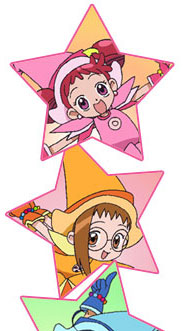

「一大早就起得这么早，你该不会又看上哪个男生了吧？」
面对超毒舌的妹妹泡泡的吐槽，春风DoReMi一句反驳的话也说不出来，只好默默出门去上学。她就是憧憬着魔法、自称「世界上最不幸的美少女」的春风DoReMi！
……「结果还是没敢向喜欢的学长表白……要是会使用魔法的话该多好啊……」失落的DoReMi垂头丧气地走着，不知不觉间来到了一家名为「卷旗山莉卡的魔法堂」的奇怪商店前。在店里，DoReMi看着一身标准魔女打扮的女店主魔女莉卡，一下子识破了她的真面目——「难道你是……魔女！？」
话音刚落，魔女莉卡竟然瞬间变成了一只奇特的「魔女青蛙」！变成了魔女青蛙的魔女莉卡，一把揪住DoReMi要求她负起责任、也成为一名魔女。因为变成魔女青蛙的魔法使，只有靠识破自己身份的那个人施展魔法，才能恢复原本的模样。
……就这样，阴差阳错成为见习魔女的三位少女——DoReMi、羽月、爱子。以学校和「MAHO堂」这家店铺为舞台，三人为成为独当一面的魔女而展开了充满魔法与奇迹的每一天修行……。
|
|
 |